Главное в пяти пунктах
Без выходных до 21:00 и оценка по фото за 5 минут. Это ваш главный довод. У двух мастерских, где я нашла график, воскресенье выходной, а суббота до 15:00.
Рилс приводят людей: «Последствия от самоката» посмотрели около 7 тысяч раз. Но дальше всё идёт в директ, а ссылка в шапке ведёт в Telegram-канал на 33 подписчика.
Услуги, график и «пришлите фото» спрятаны в трёх хайлайтс. Новый человек их не открывает и пишет одно: «сколько будет моя вмятина».
У пяти мастерских PDR в Симферополе есть свои сайты, у большинства с ценами «от», примерами работ и гарантией 1 год. Сайта PDR Спутник в поиске я не нашла.
Сайт делается за 7–10 дней. Рилс, поиск и карты будут вести в одно место, где фото вмятины сразу превращается в заявку с днём визита.
Что у вас уже сильное
- График 7/0 с 9:00 до 21:00. Можно приехать после работы и в воскресенье. Для человека с вмятиной это часто решает, к кому ехать.
- Ответ по фото за 5 минут. В хайлайтс «Консультация» прямо написано: пришлите фото с разных сторон, и через 5 минут будете знать всю информацию. На сайте это станет кнопкой на первом экране.
- Заводское ЛКП и гарантия на каждую работу. «Сохраняем заводское ЛКП, приводим его в первозданный вид, даём гарантию» в шапке отвечает на главный страх: не испортят ли краску.
- PDR и детейлинг в одном месте. Шесть услуг: вмятины, полировка кузова, защита спецсоставами, полировка и оклейка фар, химчистка салона, удаление сколов и царапин. Один визит закрывает несколько задач.
- Рилс, которые хочется досмотреть. «Смешная машина», «Скрылись с места ДТП», «Ремонт за 12 часов» про скорую. 829 подписчиков при 12 публикациях: почти каждый пост работает.
- Честные фото до и после. Дверь у ручки, крыло у фонаря, решётка Octavia A7 с подписью мастера. Это готовый раздел «Работы».
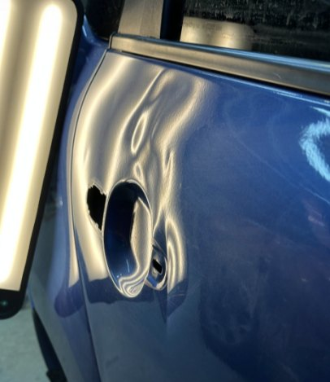
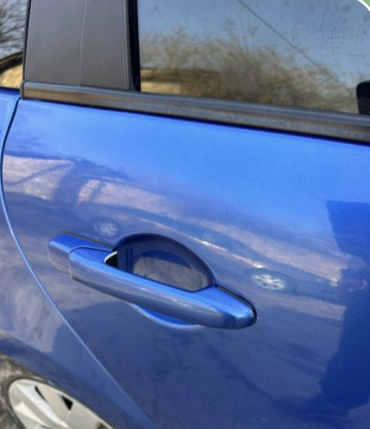
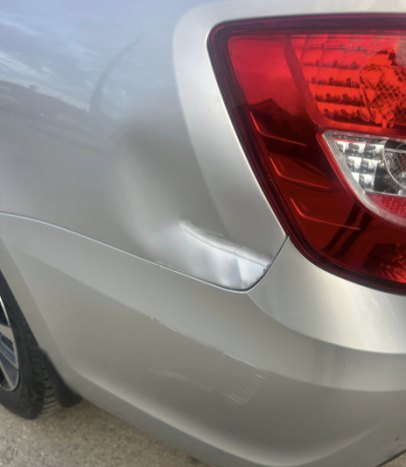
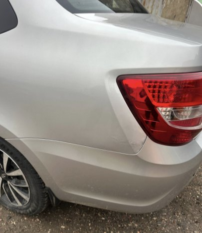
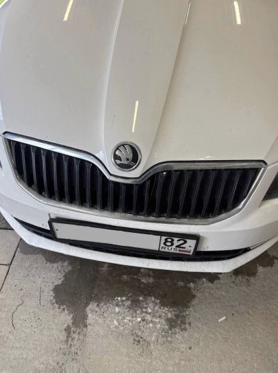
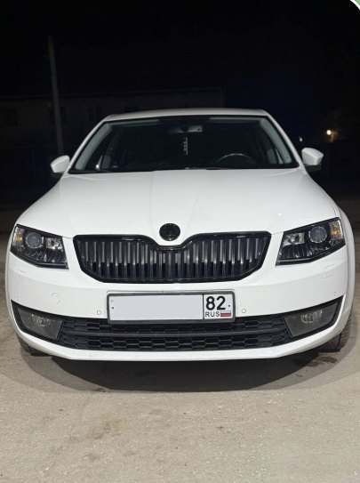
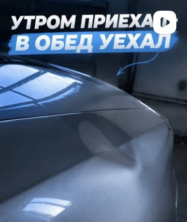
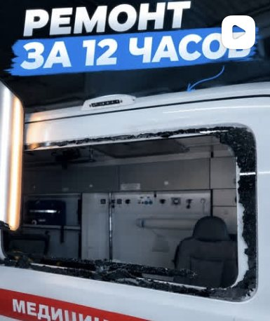
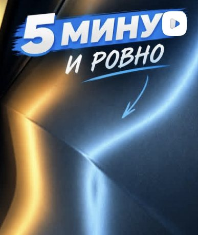
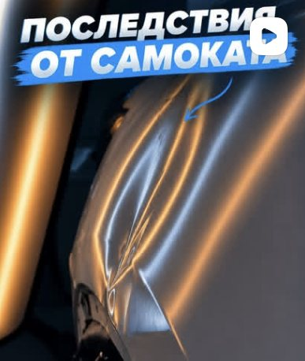
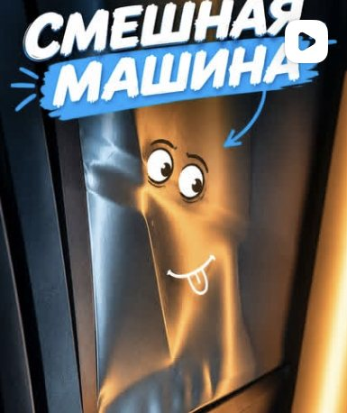
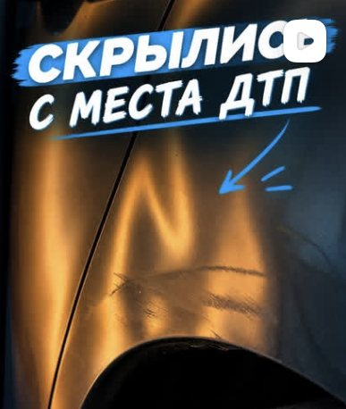
Фото из вашего Telegram-канала и обложки рилс из Instagram
Что сейчас мешает
- В шапке профиля нет адреса и телефона, только «Пишите в Direct!». Человеку, который хочет просто приехать, приходится спрашивать, где вы.
- Каждая оценка собирается по кусочкам: фото, потом марка, потом «краска цела?», потом «а в воскресенье можно?». Мастер отвечает между работами, и часть людей не дожидается.
- Цен «от» нет ни в шапке, ни в хайлайтс. У соседей на сайтах они есть: от 500 и от 1 000 ₽, или 5, 10 и 20 тысяч по размеру вмятины. Кто сравнивает, уходит туда, где видит цифру.
- Тот, кто ищет «вмятины без покраски Симферополь» в Яндексе, видит сайты других мастерских. Профиля в Instagram в этой выдаче я не увидела.
- Фото до и после лежат в Telegram-канале на 33 подписчика, а самые сильные видео в ленте Instagram. Собрать их в одном месте пока негде.
Что спрашивают перед ремонтом
Две группы вопросов, и на обе сайт отвечает до того, как человек напишет вам.
Вмятина
Детейлинг
Кто ещё работает в нише
PDR-SERVICE
pdr-service.ruКузовной ремонт и удаление вмятин без покраски. Таблица цен по размеру вмятины: от 1 000 ₽ до 1 см и до 15–25 тыс. ₽ до 35–50 см. Примеры работ по маркам с ценой, гарантия 1 год. Пн–пт 9:00–19:00, сб 9:00–15:00.
PDR-центр Крым
pdr-crimea.ruОт 1 000 ₽, от 30 минут до 2 дней. Гарантия 1 год по договору. Кейсы с ценой и сроком, например Mazda CX-5 после снега с крыши. Есть детейлинг и обучение PDR.
PDR-BOX
pdr-box.ruОт 1 500 до 35 000 ₽, сложная работа от 1 до 4 часов. Вмятины после града и упавших деревьев, выезд мастера. Пн–пт 9:00–18:00, сб 9:00–15:00, вс выходной.
Neon Expert
neonexpert.ruТри цены по размеру: мелкие вмятины 5 000 ₽, средние 10 000 ₽, крупные около 20 000 ₽. Примерную цену называют по фото в мессенджере, точную после осмотра и фиксируют в договоре.
Авто Престиж
autoprestige-crimea.ruПокраска и кузовной ремонт, отдельная страница про удаление вмятин без покраски и раздел отзывов. Пишут, что работают с машинами любых марок.
Описания собраны по открытым данным и поисковой выдаче на 2 ноября 2026. Цены и график у мастерских могли измениться.
Что стало нормой
- Свой сайт, который находится в Яндексе
- Цены «от» или по размеру вмятины
- Примеры работ с маркой машины
- Гарантия 1 год
Чего я у них не встретила
- Загрузку фото вмятины прямо на сайте с выбором дня
- Ответ по фото за 5 минут как обещание
- Работу в воскресенье и до 21:00 у тех, где указан график
- Видео ремонта рядом с фото до и после
Что должен делать ваш сайт
Принимать фото вмятины
До трёх фото, марка и деталь приходят вам в Telegram одним сообщением.
Записывать на удобный день
Семь дней в неделю: утром, днём или вечером до 21:00.
Показывать работы
До и после по деталям: двери, крылья, капот. Рядом ваши рилс.
Называть цены «от»
По услугам детейлинга и по размеру вмятины, чтобы не терять тех, кто сравнивает.
Отвечать на частые вопросы
Краска, следы, время, гарантия и что делать после града.
Находиться в поиске
По запросу «вмятины без покраски Симферополь», плюс ссылка в шапке Instagram.
Было и стало
Так обычно выглядит путь от первого вопроса до записи, и так он выглядит с сайтом.
Пять сообщений, а мастер в это время под лампой с другой машиной.
Одно сообщение. Мастеру остаётся ответить ценой.
Что можно предложить вашим клиентам
Это варианты на обсуждение, берите то, что подходит.
Перед продажей машины
Убрать вмятины и отполировать кузов за день. Машина без вмятин продаётся дороже, а заводская краска на месте и толщиномер это покажет.
Сертификат к Новому году
Химчистка салона или полировка фар в подарок мужу, папе или другу-автомобилисту.
Зимняя защита кузова
Защита спецсоставами до реагентов и заодно проверка мелких вмятин с парковки.
«Утром приехал, в обед уехал»
Запись на 9:00 с выдачей к обеду как отдельная кнопка. Ваш рилс уже это обещает.
Что нужно уточнить
- Где находится мастерская и как к вам проехать? Есть ли точка на Яндекс Картах или в 2ГИС?
- Можно ли показывать цены «от» на сайте? Хотя бы по детейлингу и по размеру вмятины.
- Гарантия: на какой срок и на что именно?
- Куда удобнее получать заявки с фото: в Telegram, WhatsApp или в директ?
- Есть ли оригиналы фото и видео до и после? Сейчас я взяла кадры из Telegram-канала.
- Что за вторая ссылка в шапке Instagram? Если там уже есть сайт или Taplink, перенесём всё нужное.
- Мастер один или вас несколько? Хотите показать мастеров на сайте по имени?
- Название ИП для политики конфиденциальности.